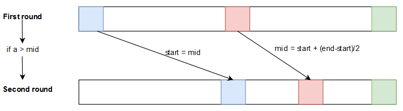

Binary search in Golang on large files

Description
For a recent need I wish to make a return on the implementation of the binary search in Go on a large file
Definition : Binary Search is a search algorithm for finding the position of an element in a sorted array. The principle is as follows: compare the element with the value of the cell in the middle of the table; if the values are equal, the task is completed, otherwise we start again in the relevant half of the table.
Like a picture is worth more than a thousand words, as shown in the following diagram, if we start with a sorted list (this is an essential prerequisite) with numbers from 0 to 100, start will be 0, end will be 100 and mid will be 50. If the search element (a in the example) is 51, in the first round as a is greater than mid, start will take the value of mid, end will keep its value and mid will be equal to (start + (end-start)/2) (the mid of the mid what …) and so on until mid is equal to 51.

In this example it would only take 5 loops, compared to a line-by-line reading, so we gain 46 iterations although it may not seem like much, on very large files, the time savings are impressive.
For my need, the target file is 550 million lines long, so it’s better to do a few hundred or a few thousand loop laps than to go through the whole file with each search. From a search of several minutes we go to only a few seconds.
My final result is a search with a file of 20,000 lines to find matches in the said file of 550 million lines, so I go from several hours of research to only a few tens of seconds.
The main problem encountered is that the different implementations found was on a small array (so elements loaded in memory), except that in most cases it is not possible to load such a file (20Gb) in RAM … on a line-by-line reading it is possible to create a buffer that loads pieces of the file during the reading.
Implemention
Found here, you can implement this in this way :
file, err := os.Open("big_file.txt")
if err != nil {
println(err)
}
defer file.Close()
scanner := bufio.NewScanner(file)
buf := make([]byte, 0, 1024*1024)
scanner.Buffer(buf, 10*1024*1024)
for scanner.Scan() {
print(scanner.Text())
}
But loading a small part of the file doesn’t allow to do a binary search … the other solution is to work directly on the bytes ! If you know the size of the file in bytes you can jump directly to the desired place in the file and instead of reading the whole file, just extract the part you want.
The following implementation looks for hashes and takes three parameters (hard in the code), “hash.txt” which matches the hashes you want to look for, “output.txt”, which will contain the output result and “BigHashFile.txt” which contains the reference list (the 550 million line file).
The only initial problem was that when I place myself at a place in the file (on a bytes) how do I know that it is the beginning of the line? This is what the [fls] package (https://github.com/stoicperlman/fls) allows very easily.
Globally, for each line of the input file, I reset the values start, end and mid to their base values, doing this allows not to have a sorted input file. Then in an infinite loop, I compare if the extracted bytes correspond to the searched hash and this until its position is found (so I extract the corresponding line in the 550 millions lines file), in the case where the input does not exist in the big file, there will be a moment where start or end will be equal to mid, so I exit my loop and go to the next hash to search.
If you want to use this piece of code for something other than hashes, just modify the regex which in this case is designed to search for NTLM hashes and therefore the large hash file has lines in the form hash:occurence.
package main
import (
"bufio"
"fmt"
"io"
"log"
"os"
"regexp"
"github.com/stoicperlman/fls"
)
func main() {
// Open hashs input files
hashs, err := os.Open("hash.txt")
if err != nil {
log.Fatal(err)
}
defer hashs.Close()
scanner := bufio.NewScanner(hashs)
// Open / Create the output file
out, err := os.OpenFile("output.txt", os.O_CREATE|os.O_RDWR, 0600)
if err != nil {
log.Fatal(err)
}
defer out.Close()
// Open BigHash input file
f, _ := os.OpenFile("BigHashFile.txt", os.O_CREATE|os.O_RDONLY, 0400)
defer f.Close()
file := fls.LineFile(f)
r, _ := regexp.Compile("([A-Z0-9]{32}):[0-9]{1,}")
hash := scanner.Text()
// Whence is the point of reference for offset
// 0 = Beginning of file | 1 = Current position | 2 = End of file
var whence int = 0
// Count the number of bytes
fStat, _ := f.Stat()
v := 0
x := 0
// For each line of input hashs file
for scanner.Scan() {
hash = scanner.Text()
start := int64(whence) // Start of file in Int64
end := fStat.Size() //End of file in Int64
mid := start + (end-start)/2 // Retrieves the middle of the file (in bytes)
// Go to the middle at the beginning of the line
file.Seek(mid, whence)
file.SeekLine(0, io.SeekCurrent)
// Extract hash from the line
length1 := make([]byte, len(hash))
n1, _ := f.Read(length1)
extract := string(length1[:n1])
for {
if hash == extract {
start, _ = file.SeekLine(0, io.SeekCurrent)
length1 = make([]byte, len(hash)+12)
n1, _ = f.Read(length1)
extract = string(length1[:n1])
out.WriteString(r.FindString(extract) + "\n")
x++
break
} else if hash > extract {
start = mid
mid = start + (end-start)/2
} else {
end = mid
mid = start + (end-start)/2
}
file.Seek(mid, whence)
file.SeekLine(0, io.SeekCurrent)
length1 = make([]byte, len(hash))
n1, _ = f.Read(length1)
extract = string(length1[:n1])
if start == mid || end == mid {
break
}
}
v++
}
// Print number of founded hashs
fmt.Printf("%d hashs analyzed and %d found \n", v, x)
}
To use this script you just need to have golang installed on your system apt-get install golang-go under Linux and issue the following commands:
go get github.com/stoicperlman/fls
go run main.go // For uncompiled use
go build main.go // To compile the source file
In the report, the script must be launched in the same directory as the input files.
Github project
For a more complete usage example, you can find on my Github the implementation for searching with SHA1 or NTLM hashes. Thanks to this system I can search more than 20,000 hashes in the 550 million hash file in less than 30 seconds.